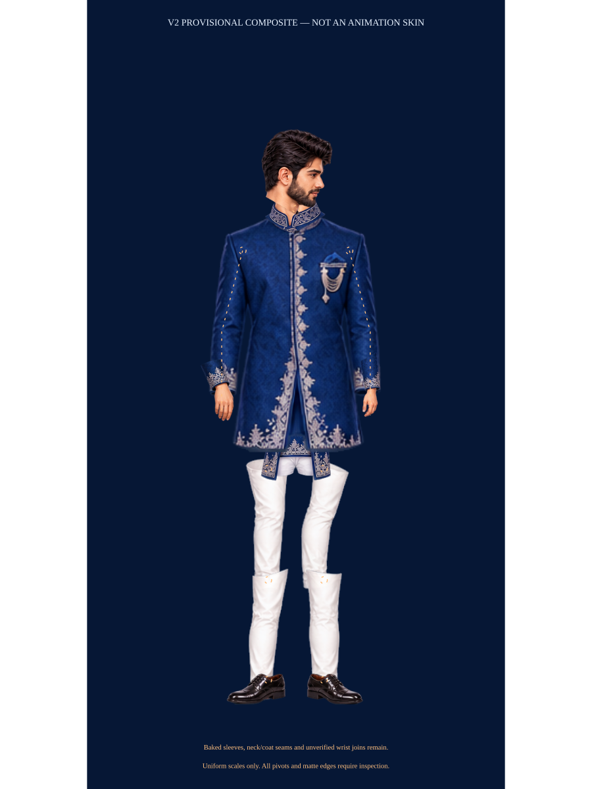

Groom v2: artwork additions, not yet a complete rig
DO NOT ACTIVATE. Source: Groom Character Rig Asset Sheet.png. Provisional matte candidates; no source RGB has been repainted.

The torso already contains sleeves. This preview cannot establish independent articulation; the left relaxed hand is reused from v1 without mirroring; wrist and cuff compatibility are still unverified.
Comparison with every prior missing item
groom-head-3q-right.png: new-visible-candidate Isolated desired head is now present; hidden neck/scalp coverage and registration not verified.
groom-neck.png: partial Neck view exists but is fused with collar and beard cutoff; complete hidden neck still required.
groom-hair-front.png: new-visible-candidate Independent hair drawings added; perspective and hidden roots must be fitted to the chosen head.
groom-hair-back.png: new-visible-candidate Independent hair drawings added; perspective and hidden roots must be fitted to the chosen head.
groom-torso-front.png: partial Torso illustrations exist, but complete sleeves/side edges remain baked in. Require sleeve-free matching skins.
groom-torso-back.png: partial Torso illustrations exist, but complete sleeves/side edges remain baked in. Require sleeve-free matching skins.
groom-pelvis.png: partial New lower-torso/shorts drawing exists with baked coat panels. Complete separable pelvis/hip caps are not proven.
groom-coat-front-left.png: new-visible-candidate Separate visible panels now present; hidden waist surfaces and embroidered seam alignment remain unverified.
groom-coat-front-right.png: new-visible-candidate Separate visible panels now present; hidden waist surfaces and embroidered seam alignment remain unverified.
groom-coat-back.png: still-required No separate rear coat hem layer is provided.
groom-upper-arm-left.png: partial Long cuffed sleeve references exist, not verified shoulder-to-elbow skins with hidden caps.
groom-upper-arm-right.png: partial Long cuffed sleeve references exist, not verified shoulder-to-elbow skins with hidden caps.
groom-forearm-left.png: partial Visible forearm references exist. Left includes a fused fist; elbow/wrist overlap missing.
groom-forearm-right.png: partial Visible forearm references exist. Left includes a fused fist; elbow/wrist overlap missing.
groom-hand-right-hold-back.png: partial A single curled right hand is added; split palm/finger occlusion and joined contact are not supplied or verified.
groom-hand-right-hold-front.png: partial A single curled right hand is added; split palm/finger occlusion and joined contact are not supplied or verified.
groom-thigh-left-complete.png: reusable-visible-art-needs-repaint White trouser pixels can be reused; hidden hip/knee/ankle surfaces and joint overlaps are still open/unverified.
groom-thigh-right-complete.png: reusable-visible-art-needs-repaint White trouser pixels can be reused; hidden hip/knee/ankle surfaces and joint overlaps are still open/unverified.
groom-shin-left-complete.png: reusable-visible-art-needs-repaint White trouser pixels can be reused; hidden hip/knee/ankle surfaces and joint overlaps are still open/unverified.
groom-shin-right-complete.png: reusable-visible-art-needs-repaint White trouser pixels can be reused; hidden hip/knee/ankle surfaces and joint overlaps are still open/unverified.
groom-shoe-left-3q.png: reusable-visible-art-needs-registration Individual shoes available but side views point opposite ways; matched perspective and heel/toe registration are unverified.
groom-shoe-right-3q.png: reusable-visible-art-needs-registration Individual shoes available but side views point opposite ways; matched perspective and heel/toe registration are unverified.
Transparent candidate exports
head-frontClean visible front head; neck root and overlay compatibility unverified.head-3q-rightDesired right-looking head is newly isolated; scalp/neck hidden coverage unverified.head-3q-leftAlternate view; neck/collar remains merged.head-backAlternate head/back view; not a front-facing hair skin.hair-frontSeparate hair drawing exists; root and fit to three-quarter head unverified.hair-backSeparate hair exists; perspective/root registration unverified.neck-collarNeck is merged with collar/beard cutoff; no complete hidden neck surface.collar-detailRectangular painted detail reference, not an isolated collar skin.torso-front-with-sleevesFront torso still includes complete sleeves. Cannot independently articulate shoulders/elbows.torso-backBack view exists; sleeve edges and shoulder coverage still unverified.coat-front-leftVisible coat panel; hidden waist connection/embroidery continuity unverified.coat-front-rightVisible coat panel; hidden waist connection/embroidery continuity unverified.pelvis-with-coatNew pelvis drawing includes blue coat panels and shorts. Hip caps and cloth separation unverified.sleeve-left-upper-referenceUpper-arm drawing still includes a long sleeve and cuff; elbow cap not a verified upper-arm skin.sleeve-left-forearm-with-handForearm, cuff and fist fused; independent wrist not available.sleeve-right-upper-referenceLong upper sleeve includes embroidered cuff; shoulder/elbow overlaps unverified.sleeve-right-forearmVisible forearm section exists; elbow/wrist hidden coverage unverified.hands-left-hold-pairTwo joined hands remain fused; not a groom-only layer.hand-right-relaxedIndividual relaxed hand and cuff available; wrist seam/perspective unverified.hand-right-holdIndividual curled hand exists; no independent front/back grip occlusion or bride contact registration.thigh-leftVisible white cloth intact; hip/knee overlap is not supplied.shin-leftOpen knee/ankle cut ends; no painted hidden joint caps.thigh-rightVisible white cloth intact; hip/knee overlap not verified.shin-rightOpen ends and hidden joint fill missing.shoe-left-sideComplete side shoe but points left; matched walking perspective/contact landmarks unverified.shoe-right-sideComplete side shoe points right; not an approved matched pair.hand-left-relaxed-v1Reused v1 relaxed hand without redraw or mirroring. Lighting, cuff overlap and anatomical-side matching to v2 are unverified.